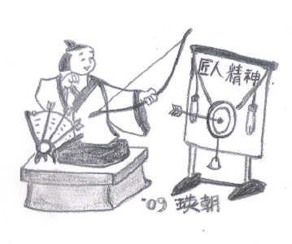

과거 조박사의 로봇/과학칼럼과 현재의 의미
과거 10년전 신문에 게제된 로봇/과학칼럼 이슈를 살펴보고 현재적 의미에서 재 해석해 본다.
21세기 과학기술강국 대한민국의 과제
(천지일보 창간호, 2009년9월10일)

자동차 다음은 로봇이다!
(천지일보, 2009년9월26일)

일본 카라쿠리 인형에서 본 장인정신
(천지일보, 2009년10월9일)

로봇이 서해로 간 까닭은?
(천지일보, 2009년10월25일)